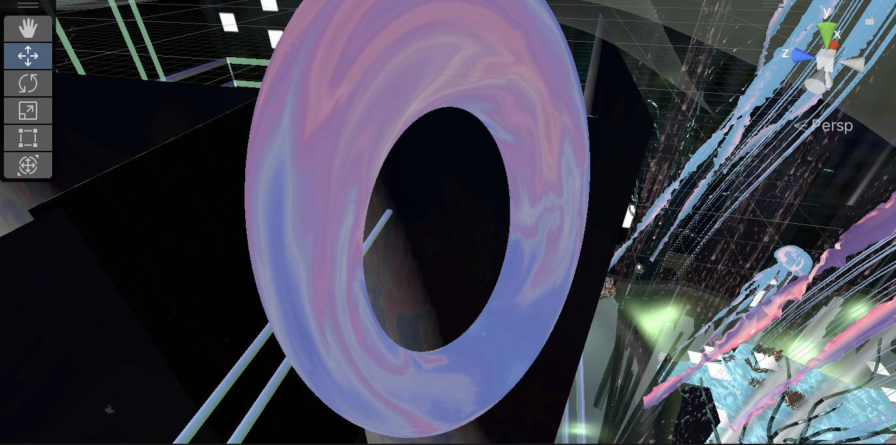
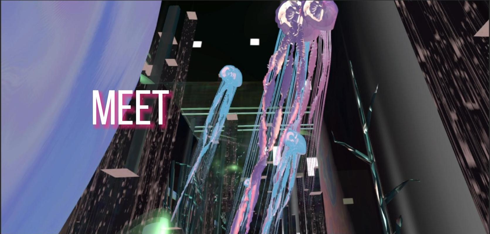

Video
Video from this Meet
Images
我的灵感来自电影《瞬息全宇宙》，该片展示了多元宇宙中发生的一系列事件，其中一个宇宙的人变成了香肠人，整个宇宙进化成了香肠。这个概念让我着迷。在这个项目中，我与儿时的朋友交谈，他让我想起了我们小时候一起观看的奇幻冒险，给了我巨大的灵感。因此，我将我的VR项目视为一个现实的多元宇宙，并将我自己的童年故事融入其中。我用我寻找儿时朋友的巴黎之旅作为VR宇宙的向导。虚拟现实体验遵循与真实世界地图相同的路径，但遭遇和景观不同。我将整个旅程记录为一个数据集，并使用机器学习算法生成用于VR建模的图像。我把这个过程作为一个时间线引入了VR世界。然后，我利用机器学习对抗性网络来处理记录的图像，并理解计算机的视角。最后将这些场景被连接在一起以构建VR环境的模型。
 关于视觉元素的使用，我融入了各种海洋元素，如水母、流动的河流和类似波浪的薄雾形状，因为它们与数字世界有着相似的流动性。此外，从伦敦到巴黎的一段旅程是在水下进行的。我作品中的圆形和垂直线条图案呼应了车站独特的玻璃面板，并有效地展示了机器学习生成的照片的结果。我使用了不同的材质效果，例如调整排放和材质透明度，以创建不同的视觉效果。